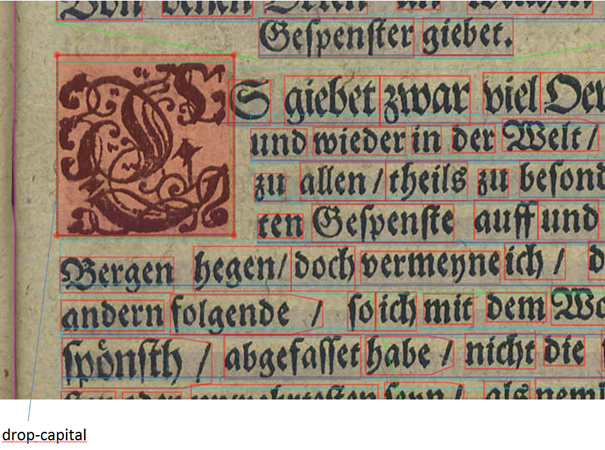

Initiale (drop-capital)
TextRegion
Initialen werden als spezielle TextRegion ausgezeichnet. Das gilt auch dann,
wenn sie stark graphisch verfremdet wurden. Sie erstrecken sich meistens über mehrere
Zeilen und es ist überwiegend der erste Buchstabe eines Absatzes, der graphisch
gestaltet oder farblich von der Schrift des Textes abgehoben wurde. In seltenen Fällen
sind ganze Wörter als Initialen gestaltet und werden auch dann als solche erfasst.

Beziehung zwischen der Initiale und dem folgenden Paragraphen
Um die Beziehung von Initiale (<textRegion type="drop-cap">) und
dem folgenden Paragraphen (<textRegion type="paragraph">) zu
dokumentieren, ist das Element <Relations> zu verwenden. Nach
der Festlegung der <ReadingOrder> muss mit dem Element
<Relations> die Beziehung zwischen den Regionen dargestellt
werden.
Relations
<ReadingOrder>
<OrderedGroup id="ro_1542737988725" caption="Regions reading order">
<RegionRefIndexed index="1" regionRef="TextRegion_1476719248728_212"/>
<RegionRefIndexed index="2" regionRef="r_7_1"/>
<RegionRefIndexed index="3" regionRef="region_1476719221656_210"/>
<RegionRefIndexed index="4" regionRef="region_1476719208569_209"/>
<RegionRefIndexed index="5" regionRef="TextRegion_1476719753697_244"/>
<RegionRefIndexed index="6" regionRef="r_13_1"/>
<RegionRefIndexed index="7" regionRef="r_15_1"/>
...
</OrderedGroup>
</ReadingOrder>
<Relations>
<Relation id="rel1" type="join">
<SourceRegionRef regionRef="region_1476719208569_209"/>
<TargetRegionRef regionRef="TextRegion_1476719753697_244"/>
</Relation>
</Relations>
...
<TextRegion type="drop-capital" id="region_1476719208569_209">
<Coords points="202,421 264,421 264,511 202,511"/>
<TextLine id="line_1476719868959_258">
<Coords points="202,418 260,418 260,510 202,510"/>
<Baseline points="205,512 260,512"/>
<Word id="word_1476720774882_4">
<Coords points="204,419 258,419 258,511 204,511"/>
<TextEquiv>
<Unicode>P</Unicode>
</TextEquiv>
</Word>
<TextEquiv>
<Unicode>P</Unicode>
</TextEquiv>
</TextLine>
<TextEquiv>
<Unicode>P</Unicode>
</TextEquiv>
</TextRegion>
<TextRegion type="paragraph" id="TextRegion_1476719753697_244">
<Coords points="270,411 958,411 958,528 951,579 946,612 340,628 253,628 253,571 254,515"/>
<TextLine id="tl_7" primaryLanguage="German">
<Coords points="271,412 957,412 957,473 271,473"/>
<Baseline points="271,460 957,460"/>
<Word id="w_w1aab1c21b2b3b1ab1" language="Latin">
<Coords points="271,420 533,420 533,471 271,471"/>
<TextEquiv>
<Unicode>HarmacopϾ</Unicode>
</TextEquiv>
<TextStyle fontFamily="Antiqua" fontSize="47.0"/>
</Word>
...
</Textline>
</TextRegion>